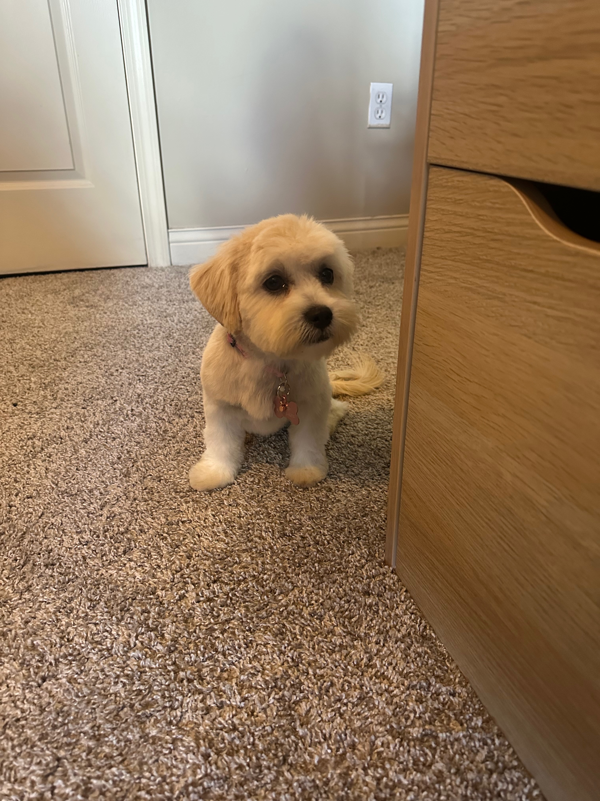

Welcome to my professional webpage, where you can explore a comprehensive overview of my academic and professional achievements, experiences, and certifications. Unlike a traditional resume, this platform offers an in-depth look at my skills and accomplishments, providing a fuller picture of my qualifications and career journey. Here, you’ll find detailed information that goes beyond the confines of a 1-2 page resume, showcasing how my background and expertise align with my professional goals.